Helmholtz Coils
A useful laboratory technique for getting a fairly uniform magnetic field is to use a pair of circular coils on a common axis with equal currents flowing in the same sense. For a given coil radius, you can calculate the separation needed to give the most uniform central field. This separation is equal to the radius of the coils. The magnetic field lines for this geometry are illustrated below.

The magnetic field on the centerline of a current loop can be calculated from the Biot-Savart law. The magnetic field from the two loops of the Helmholtz coil arrangement can be obtained by superimposing the two constituent fields.
|